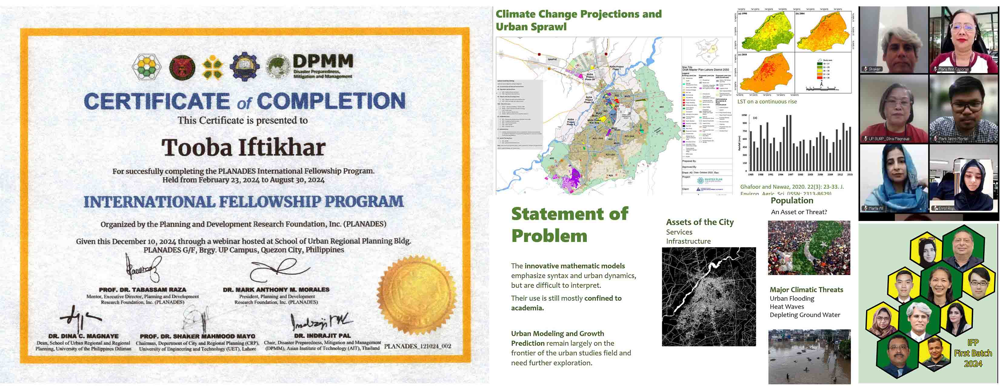
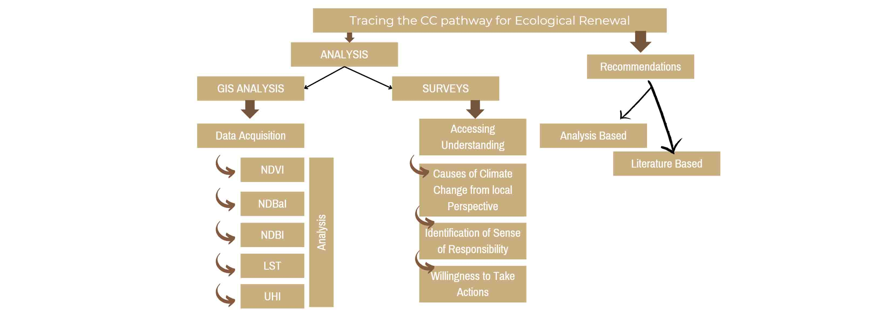
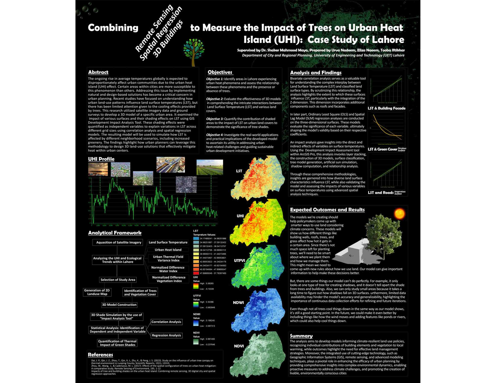

PLANADES Fellowship
Research Title: Development of an Urban Spatial Scenario Design Model (USSDM) for Climate-Resilient Urban Planning in Lahore, Pakistan
International Seminar on Climate Change Implication on Migration (ISCCIM): Role of US Real Estate Management Towards Livelihood Opportunities International Fellowship of Planning and Development Research Foundation, Inc. (PLANADES), Philippines
Abstract
Rapid urbanization and climate change present significant challenges for cities worldwide, with developing world cities facing heightened risks. Factors such as population growth, land use changes, environmental degradation, and increased vulnerability to climate-related hazards contribute to the vulnerability of these cities. This study focuses on Lahore as a case study area and aims to develop an Urban Spatial Scenario Design Model (USSDM) that integrates climate change resilience into urban planning efforts. By incorporating climate change projections and vulnerability assessments, stakeholders can better understand the risks and opportunities associated with different development strategies. The development process includes (a) data collection, (b) model design, (c) implementation in Geographic Information Systems (GIS) software, (d) calibration, (e) scenario analysis, and (f) interpretation of results. This initiative not only aims to inform decision-makers but also to promote climate-resilient urban development in Pakistani cities, making it an essential component of their master plans for a sustainable and resilient future. Keywords: Land Use Changes, Urban Sustainability, Carbon Storage and Sequestration, Scenario Analysis, Advanced Modelling Tools
Conceptual Framework

Appended Materials
Germany Spring Workshop
Research Title: Tracing Lahore's Carbon Sequestration Pathway: Integrating Remote Sensing, GIS, and Local Perspective for Urban Ecological Renewal
International Conference on Planning in Germany and Pakistan: Responding Challenges of Climate Change through Intercultural Dialogue Spring Workshop at TU Dortmund University and Winter School at NUST within DAAD-funded Project
Abstract
Unplanned growth of cities is threatening both built and natural systems with long-term consequences. This paper mainly focuses on analyzing the LST, LULC, NDVI and NDBI of Lahore, Pakistan using remote sensing over the past three decades including the impacts of COVID-19 lockdown on the above factors. Urban thermal characteristics were analyzed by investigating the relationships between the land surface temperature (LST), percent impervious surface area, and two indices, the Normalized Difference Vegetation Index (NDVI) and Normalized Difference Built-up Index (NDBI). The objective here is to determine and analyze the spatial variability of LST caused by the land use change between the year 1993 to 2023 in Lahore in the context of urbanization. Further this study integrates the local perspective and their perceptions related to rising temperatures and ecological environment. This study emphasizes on adopting effective strategies, including afforestation, reforestation and urban greening practices (including the creation of carbon sinks) which can significantly improve the CS capacity and reduce climate change and global warming impacts in the fastest-growing cities of developing countries. Keywords: Carbon Sequestration, Urban Ecology, Thermal Dynamics, NDVI, LST.
Conceptual Framework
Appended Materials
Certificates
Final Year Project
Research Title: Assessing Heat Mitigation Capacity Of Urban Green Spaces Using The Invest Model: A Scenario Analysis Of Samanabad Town, Lahore
Department of City and Regional Planning, University of Engineering and Technology (UET), Lahore
Abstract
Anthropogenic activities have led to profound environmental changes, including melting glaciers, rising sea levels, and intensified heatwaves, posing significant threats to human health, labor productivity, and socioeconomic stability. In response, efforts are underway to mitigate the impacts of global warming and safeguard communities from escalating risks. This study aims to validate the efficacy of the InVEST 3.14.2 Urban Cooling Model (UCM) in characterizing urban thermal environments. The research addresses the need for simplified assessment tools bridging academic expertise with practical applications in urban planning. Taking Samanabad Town in Lahore as a case study area, the study examines the correlation between cooling capacity (CC) and Land Surface Temperature (LST) imagery at spatial resolutions of 10 and 20 meters. Results demonstrate that higher CC values correspond to lower surface temperatures, with water bodies exhibiting the most significant cooling effect. Variability in LST within different land cover types underscores the heterogeneous nature of surface temperature distributions influenced by factors beyond CC alone. Recommendations include integrating climatic knowledge into urban planning practices to enhance resilience to extreme heat events and mitigate adverse health impacts. Policy implementation strategies should be refined to address local temperature effects consistently, with a focus on clean green initiatives informed by scientific modeling and research. As spatial data availability improves, there is an opportunity to develop globally applicable approaches for assessing natural infrastructure in urban areas, facilitating informed decision-making and sustainable urban development. Keywords: Urban Cooling Model (InVEST), Land Surface Temperature (LST), Urban Heat Island, Climate Change Mitigation
Appended Materials
Research Poster 1
Research Title: Combining Remote Sensing, Spatial Regression, 3D Buildings to Measure the Impact of Trees on Urban Heat Island (UHI): Case Study of Lahore
Abstract
The ongoing rise in average temperatures globally is expected to disproportionately affect urban communities due to the urban heat island (UHI) effect. Certain areas within cities are more susceptible to this phenomenon than others. Addressing this issue by implementing natural and design-based solutions has become a critical concern in urban planning. Recent studies have focused on understanding how urban land-use patterns influence land surface temperatures (LST), but there has been limited attention given to the cooling effects provided by trees. This research utilized satellite imagery data and ground surveys to develop a 3D model of a specific urban area. It examined the impact of various surfaces and their shading effects on LST using GIS Development Impact Analysis Tool. These shading effects were quantified as independent variables to explain variations in LST across different grid sizes using correlation analysis and spatial regression models. The resulting model will be used to simulate how LST is affected by different neighborhood scenarios, including increased greenery. The findings highlight how urban planners can leverage this methodology to design 3D land-use solutions that effectively mitigate heat within urban centers. Keywords: Urban Heat Island (UHI), Land Surface Temperature (LST), Urban Greenery, 3D Modeling, Spatial Regression
Research Poster 2
Research Title: Integrating Green and Blue Infrastructure for Temperature Reduction and Community Well-being through the Sponge City Concept
Abstract
Heat causes approximately 489,000 excess deaths annually worldwide, while over 800 children die each day from waterborne diseases. So, this research aims to explore the potential of green and blue infrastructure (GBI) in reducing urban heat island (UHI) effect and enhancing community well-being within the framework of the Sponge City concept. The study will focus on integrating nature-based solutions, such as parks, green roofs, and permeable surfaces, with blue infrastructure like urban wetlands, water bodies, and rain gardens. These interconnected spaces will not only mitigate UHIs but also support groundwater recharge. The research will investigate the role of urban-sensitive water planning and restorative infrastructure strategies in managing stormwater and enhancing water quality. By adopting resilient water supply mechanisms, the study will explore how these integrated systems can contribute to sustainable urban ecological balance. Through case studies and simulations, the research will assess the effectiveness of these interventions and the outcomes will provide valuable insights into designing multifunctional spaces. These spaces will contribute to climate adaptation, improve water resource management, and promote a healthier living environment. Keywords: Green and Blue Infrastructure (GBI), Urban Heat Island (UHI), Sponge City, Water Quality, Climate Adaptation